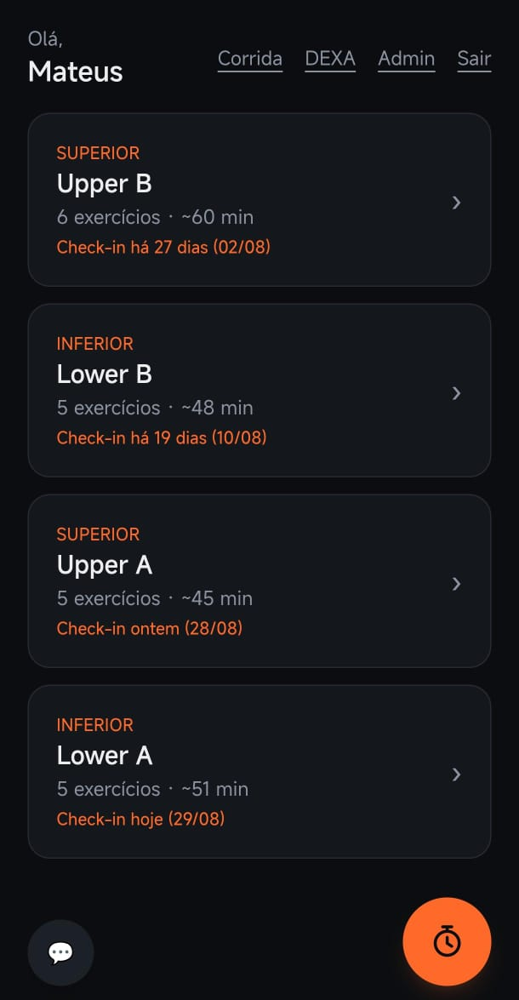
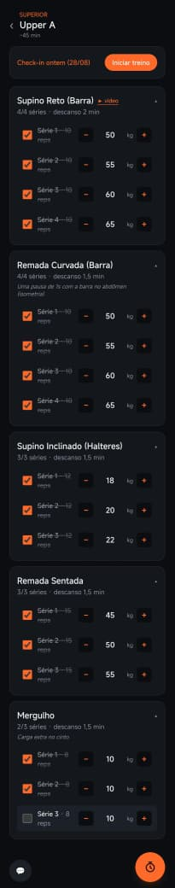
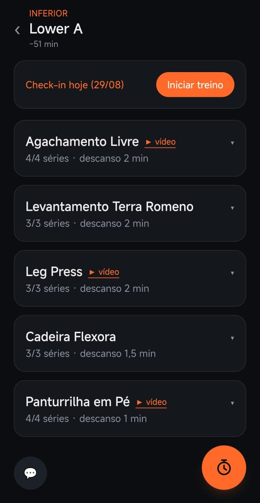
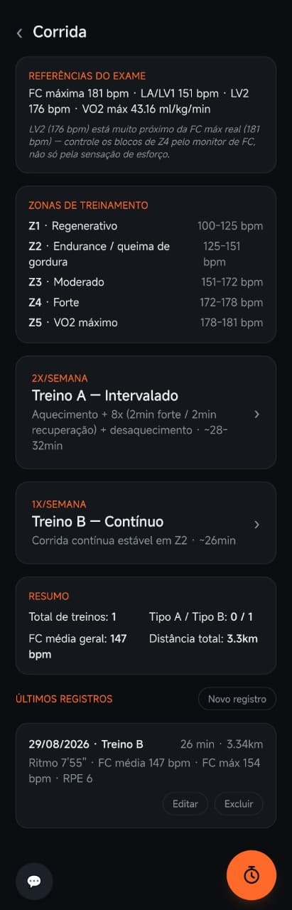
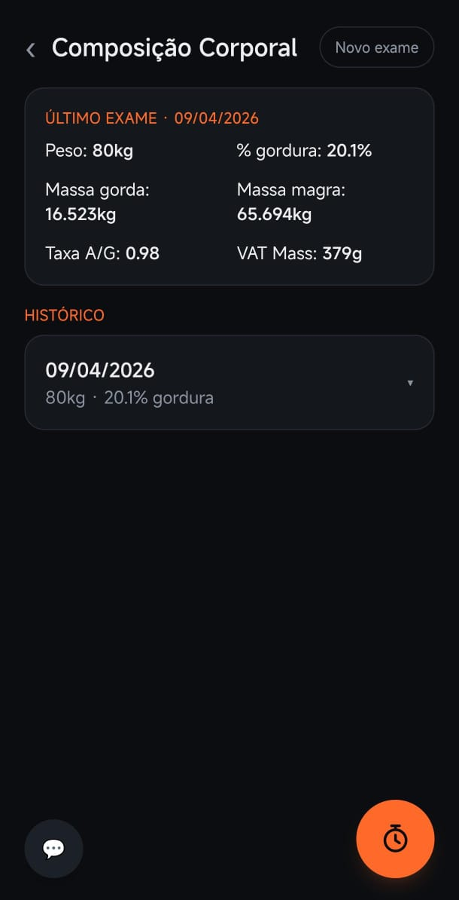
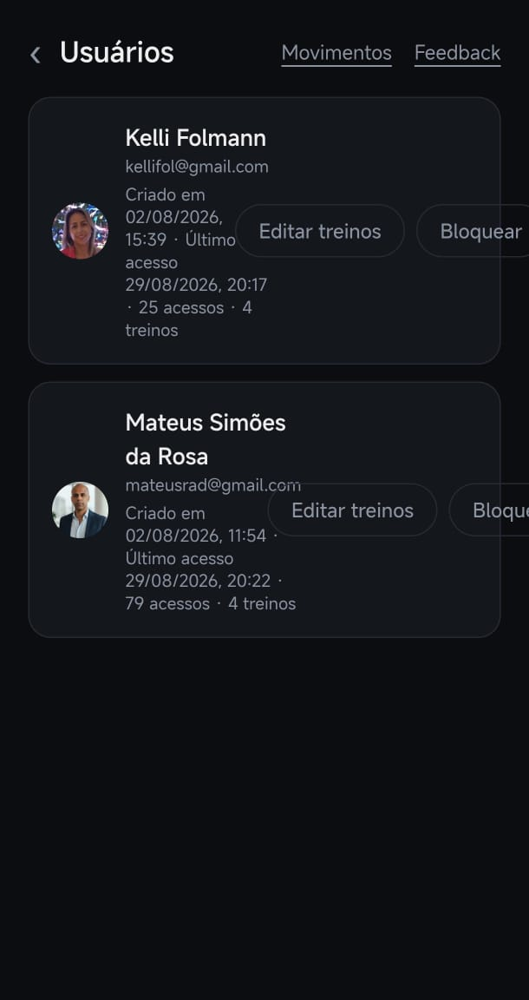

FOLHA Nº 01 — DETALHES DO PROJETO
TrainOS
App PWA de Treino, Corrida e Composição Corporal
Substitui a agenda e o caderninho de treino por um app instalável no celular que guarda carga série a série, cronometra o descanso, acompanha corrida por zona de frequência cardíaca e o histórico de composição corporal — tudo isolado por atleta, em tempo real.
FOLHA Nº 02 — O DESAFIO
Do caderninho ao app instalável
Antes do TrainOS, o controle de treino, carga e frequência de execução vivia espalhado entre a Google Agenda e anotações soltas — sem histórico de carga, sem cronômetro de descanso embutido, sem visão clara de qual grupo muscular estava mais atrasado.
O desafio era ir além de uma lista de exercícios: construir um app que qualquer atleta pudesse instalar no celular como se fosse nativo, logar com a própria conta Google e enxergar só os próprios dados — mesmo compartilhando o mesmo banco com outros atletas. Com o tempo, o escopo cresceu para cobrir também corrida (zonas de treino calculadas a partir de exame de esforço) e composição corporal (histórico de exames DEXA).
FOLHA Nº 03 — A SOLUÇÃO
Interface e Funcionalidades
O app roda como PWA — instala na tela inicial do celular, abre em tela cheia, sem passar pela App Store ou Play Store. Toda a estrutura é mobile-first, pensada para ser usada com a mão livre, no meio do treino.

Painel de Treinos
Tela inicial: lista os treinos ordenados pelo que está há mais tempo sem check-in, para o atleta nunca perder de vista o grupo muscular mais atrasado. Cada card mostra duração média estimada e a data do último check-in.

Execução do Treino
Cada série guarda repetições e carga, com checkbox de progresso conforme é concluída. Alterar a carga grava no Firestore automaticamente, sem precisar salvar manualmente.

Estrutura Fixa por Dia
Os exercícios de cada dia são fixos — o atleta só ajusta carga, não a estrutura. Vídeo demonstrativo disponível por exercício, e "Iniciar treino" dispara o cronômetro de sessão, com finalização automática caso o atleta esqueça de encerrar.

Corrida & Zonas de Treino
A partir dos dados de um exame de esforço (FC máxima, limiares, VO2 máx), o app calcula as zonas de treino (Z1 a Z5) e organiza os planos de corrida intervalada e contínua, com registro de cada sessão.

Composição Corporal (DEXA)
Histórico de exames de composição corporal, com peso, percentual de gordura, massa magra/gorda e taxa andrógino-ginóide, para acompanhar a evolução entre exames.
Painel Multiatleta

Administração de Atletas
Área restrita mostra todos os atletas cadastrados, com acessos e treinos realizados, e permite bloquear o acesso de alguém sem excluir a conta — reforçado tanto na interface quanto nas regras de segurança do banco.
FOLHA Nº 04 — ARQUITETURA
Serverless por design
O app não tem servidor próprio: é HTML/CSS/JS que fala diretamente com o Firebase (Authentication + Firestore), publicado no Firebase Hosting como PWA. O isolamento entre atletas não depende do código da interface — é garantido pelas regras de segurança do Firestore, que decidem linha a linha quem pode ler ou escrever cada documento. Toda tela atualiza em tempo real por meio de listeners do Firestore, sem botão de "atualizar".
- React
- Vite
- Firebase Authentication
- Firestore (tempo real)
- Firebase Hosting
- PWA Instalável
- Tailwind CSS